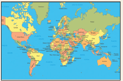
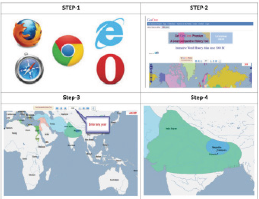

ICT CORNER
Histroy from Chiefdoms to Empires
This activity for Maps based on Vector database is a INTERACTIVITY ATLAS which helps to know about Comparative History, Political, Military, Art, Science, Literature, Religion and Philosophy in the world.

Step 1
Open the Browser and type the URL given (or) Scan the QR Code.
Step 2
World History Atlas page will appear.
Step 3
You will enter any kingdom period or political period (ex. Magadha Empire).
Step 4
You will get vector database map.

URL